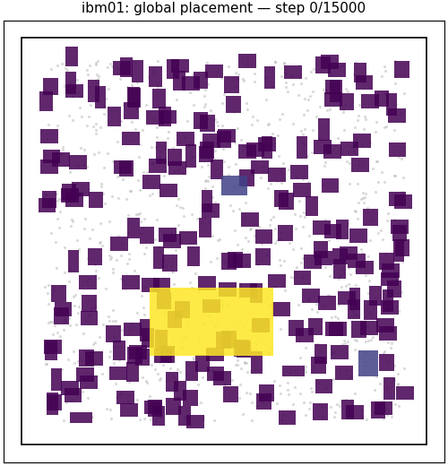
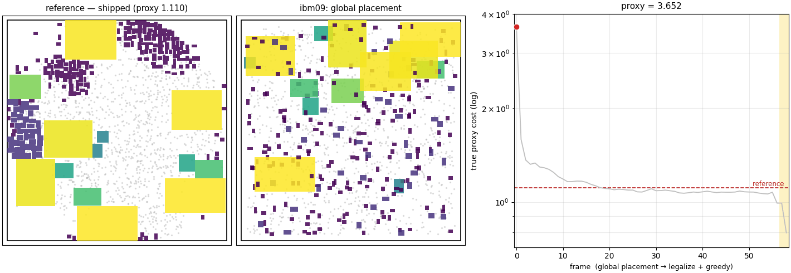
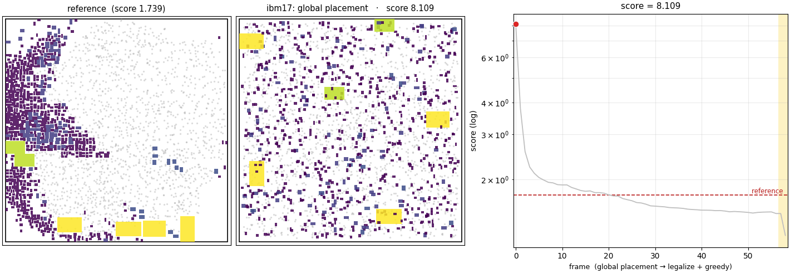
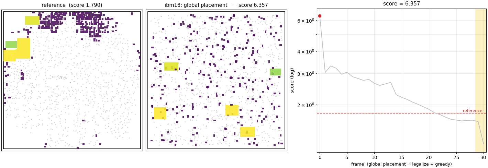
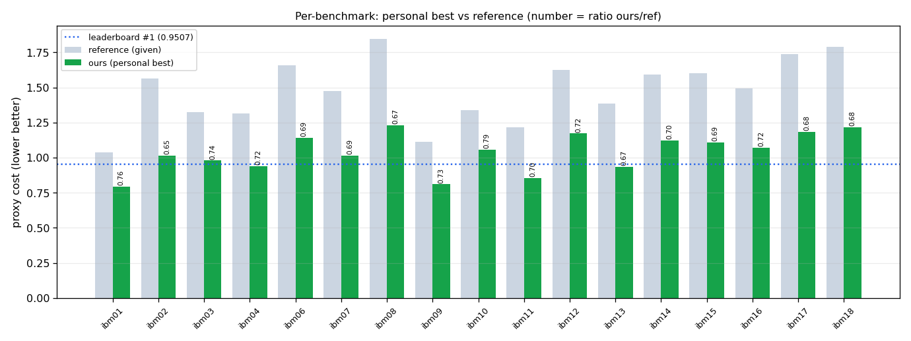
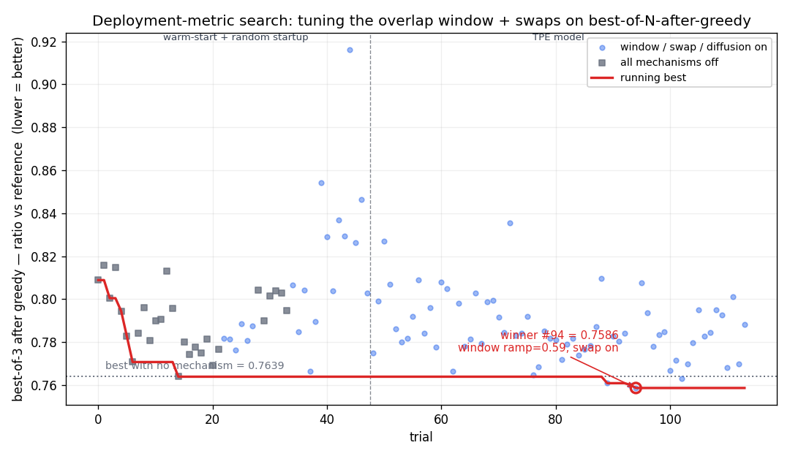
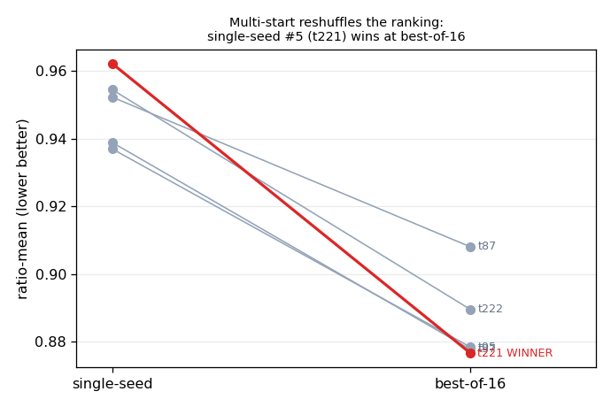

A chip is millions of tiny logic cells plus a few hundred big fixed blocks — memory units and other prebuilt components. Macro placement is deciding where those big blocks go, and it largely sets how good the finished chip is. This is my solver for a benchmark challenge that grades each placement with a single number — mostly wirelength, plus density and routing congestion, lower is better, with no blocks allowed to overlap. The animations below show it running on four chips (watch the score dive); the rest of the page is how it does that and what I learned.
Each one replays a real run, three panels: the reference placement it's compared against; my placer working (random spread → clustered, then cleaned up so nothing overlaps); and the score at each frame (lower is better, dashed line = the reference), diving below the reference. Big blocks are rectangles (color = size), the cell clusters are dots. Every time, the reference wastes canvas and mine packs it tight.




Result. From random starting placements, my pipeline averages 1.0137 over all 17 — 31% below the reference placement provided with each benchmark (avg 1.477, a RePlAce-quality baseline; RePlAce itself scores 1.458), beating it on every design with zero overlaps. The design goal was generality: the global placer optimizes any differentiable loss, so wirelength, density, congestion, or a custom objective all drop into the same GPU engine unchanged.
Compute. A candidate takes ~3–6 min (GPU global stage ~80 s + CPU polish 1–5 min), inside the challenge's 1-hour-per-benchmark limit. The 1.0137 is best-of-N over a small pool of configs (~45 candidates/benchmark in the 1-hour budget), keeping the best per benchmark; a single candidate averages ~1.1. Scope: the score is soft-macro-dominated — co-optimizing the movable standard-cell clusters drives ~98% of the gain, hard-macro moves ~0.2% — so it measures soft-cell placement more than hard-macro placement.

The exact score is 1.0·wirelength + 0.5·density + 0.5·congestion (lower is better, zero overlaps). Three stages: a continuous gradient-based global placer, a legalizer, then a discrete search on the true score.
Macro centers are free 2-D coordinates, optimized by Adam against a smooth surrogate of the score (the real terms — Manhattan wirelength, top-k density — are non-differentiable):
The weights follow a schedule: start loose so connected macros pull together, then raise them late to tighten the layout. This "spread first, tighten late" order avoids the bad local optima a fully-on objective falls into from the first step. Any differentiable loss plugs into the same engine — which is how I tested the congestion terms in the appendix.
Vectorized push-apart → strictly-gated cleanup (never worsens the score) → relocate-to-empty finisher, moving macros as little as possible. Strict zero overlap on all 17.
The surrogate plus legalizer leave a gap to the true score. A greedy search closes it: single-macro moves, accepting only true-score improvements (evaluated incrementally, ~1 ms/move on an exact-but-fast reimplementation of the metric). It moves soft macros only, so hard-macro legality holds. This stage does most of the absolute-quality work — 6.2% better than running greedy straight from the reference — and is why the score is soft-macro-dominated.
Different random starts vary a lot (~6%), so I place each design from many seeds and keep the best — the gap between a single candidate (~1.1) and best-of-N (1.0137). The candidates come from a small pool of configs run side by side: the tuned config (below), which holds the deep-overlap penalty off early so wirelength can re-sort macro ordering before the layout tightens and adds annealed same-size macro swaps, plus the earlier search's window-free configs. Different configs win different designs (the tuned one wins 11 of 17), so keeping the per-design best beats any single config. Best-of-N saturates fast: past a few dozen candidates the gains flatten — the run that produced 1.0137 already sits near that floor.
Tuned in two rounds of Bayesian optimization on 3 designs (ibm01/13/17, easy/medium/hard), scoring by the average ratio to the reference so no design dominates. A first ~230-trial search on single-seed placements found the weight/schedule region; a second, warm-started ~115-trial search then tuned on the deployment metric — best-of-3 seeds after a greedy polish, so configs are scored the way they're used — with the winner re-picked at best-of-16. That winner is the config below; it wins 11 of 17 designs in the final pool (the first search's configs stay in the pool and win the other 6).
| setting | value |
|---|---|
| wirelength sharpness | 2.44 (higher = closer to the exact wirelength) |
| schedule back-loading | 3.99 (spread early, tighten late) |
| density weight (final / start) | 0.074 / ~3% of it |
| wirelength weight at start | 73% of full |
| density target fill | 0.65 |
| density smoothing | 0.17 |
| learning rate | 0.39 |
| overlap-tolerance window | deep-overlap penalty off for the first 6% of the run, full by 65% |
| same-size swaps | annealed swap pass over equal-footprint macro pairs, active for the first third |
| diffusion term | searched, tuned to ≈0 (off) |
| gradient steps | 5000 tuned → 15000 deployed (see below) |
| density model | overflow (beat the electrostatic-field version) |
| congestion term | off — never helped (appendix) |
| overlap handling | external legalizer (only the deep-overlap penalty is windowed early) |
The deployment-metric search. Squares = window/swaps/diffusion all off; dots = mechanisms on. The winner edges the best mechanism-free config; the search plateaus once the differences between good configs fall below the seed noise.

iters jumps 5k → 15kThe 5000-iteration cap was for search speed, not a finding — and the search pushed the step count to that cap, which usually means the cap, not the ideal value, was the limit. So I tripled it to 15000 for real placements. Sweeping it afterward on the tuning designs:
| iters | ibm01 | ibm09 | ibm17 |
|---|---|---|---|
| 5 000 (tuning cap) | 0.816 | 0.822 | 1.185 |
| 15 000 (deployed) | 0.798 | 0.809 | 1.213 |
| 30 000 | 0.795 | 0.800 | 1.184 |
15k is the knee: ~1.5–2% better than 5k on small/medium designs (~80 s of GPU), and 30k adds ≤1%. It isn't uniform — ibm17 gets slightly worse, the one large congestion-bound design, echoing the theme that those behave differently. (Single-seed against a ~2% noise floor, so only the 5k→15k gain is clearly real.)
ratio = mine / reference; <1 beats the reference. †=used for tuning; all others held out.
| design | reference | mine | ratio | design | reference | mine | ratio |
|---|---|---|---|---|---|---|---|
| ibm01† | 1.039 | 0.790 | 0.760 | ibm11 | 1.214 | 0.853 | 0.703 |
| ibm02 | 1.566 | 1.026 | 0.655 | ibm12 | 1.625 | 1.152 | 0.709 |
| ibm03 | 1.325 | 0.944 | 0.712 | ibm13† | 1.385 | 0.901 | 0.651 |
| ibm04 | 1.314 | 0.920 | 0.700 | ibm14 | 1.594 | 1.112 | 0.698 |
| ibm06 | 1.658 | 1.104 | 0.666 | ibm15 | 1.603 | 1.110 | 0.693 |
| ibm07 | 1.476 | 1.011 | 0.685 | ibm16 | 1.491 | 1.071 | 0.719 |
| ibm08 | 1.847 | 1.072 | 0.580 | ibm17† | 1.739 | 1.199 | 0.689 |
| ibm09 | 1.110 | 0.771 | 0.694 | ibm18 | 1.790 | 1.198 | 0.669 |
| ibm10 | 1.337 | 1.000 | 0.748 | AVG | 1.477 | 1.0137 | 0.690 |
1.0137 is best-of-N; a single median candidate averages ~1.1. Both beat the reference on all 17, and both beat the RePlAce (1.458) and SA (2.125) baselines.
Multi-start beats a lucky seed. Single-seed scores carry ~2% noise — bigger than the gap between good configs, so the config that looked best on a single seed was just luck. Re-scoring the top five at best-of-16 reshuffled them and promoted one that had ranked only 5th on a single seed. So the final pick, and every appendix experiment, compares configs on the same seeds — otherwise you're measuring seed luck, not the change.

Per-run mechanisms can't beat multi-start. The differentiable stage mostly spreads macros and rarely reorders them past each other, so I tried several fixes for that — an early overlap-tolerance window, discrete jumps, injected noise, annealed same-size swaps. Each improves the typical placement, but none beats best-of-N, and a paired variance test shows why: the mechanisms make runs converge (lower mean, up to ~10× lower spread), but best-of-N doesn't want the typical run — it wants the best of many, and the random-start spread already produces one at least as good. Tightening the distribution just thins the tail best-of-N is picking from. (The tuned window+swap config wins its 11 designs not by reordering per se but because the swaps make it high-variance — a fatter tail for best-of-N to pick from.) The random-start variance isn't noise to remove — it's the search.
It generalizes. The frozen winning config (global stage only, no per-design selection) applied unchanged to all 17: held-out designs come in at 0.923 vs 0.885 on the 3 tuning designs — it transfers, with a mild ~4-point overfit. 16 of 17 still beat the reference frozen; only ibm06 needs the full pipeline (its frozen ratio is 1.073).
| set | n | mean ratio vs reference |
|---|---|---|
| tuning designs (ibm01/13/17) | 3 | 0.885 |
| held out | 14 | 0.923 |
| all | 17 | 0.916 |
Congestion is the wall. At my best point it's 57% of the remaining cost, and the term greedy reduces least — it depends on discrete routing, not a smooth function of position. The ~7% gap to the leaderboard leaders (~0.9507) sits on the hard, congestion-bound designs (ibm08/17/18).
Three levers I ruled out by paired experiment (appendix): an explicit congestion term in the global loss, a congestion-directed greedy, and a battery of macro-reordering mechanisms. All are neutral-to-negative — the score is soft-cell-dominated, greedy already minimizes true congestion, and best-of-N already finds the good orderings. Single-cell greedy plateaus for a mechanical reason: relieving a hot region needs moving groups of cells coherently, but any single move that vacates a congested cell lengthens its own nets and is rejected. The lever is a detailed placer with coordinated multi-cell moves (or a temperature that accepts transient wirelength increases) — not more tuning, not more congestion modeling. The single most useful next measurement is the hard-macro-only score, to separate hard-macro placement from soft-cell clustering.
The negative results shaped the design as much as the positive ones. Each is a paired experiment (identical seeds across arms, differenced per seed) to cancel the ~2–6% seed noise.
The true congestion metric deposits, per net, one unit of routing demand along an L-route skeleton (horizontal on the source row, vertical on the sink column) into capacity-normalized grids, blurs them, and reports the mean of the top 5% most-congested cells. It's non-differentiable twice over — the routing is discrete, and the top-5% mean is a sort. I built two differentiable stand-ins:
1/bbox-area, so the optimizer lowers it by spreading nets while true congestion
rises. Correlation with the true metric ≈ 0. Abandoned.Added to the global loss under four schedules — persistent, late, congestion-first, and a low-congestion warm-start — paired isolation tests on the hard designs came back neutral-to-negative on the post-greedy score every time (e.g. the warm-start: +0.09 score, 0/4 seeds). Mechanism: greedy already optimizes true congestion, so an explicit global term adds nothing it lacks while spoiling the low-wirelength layout greedy starts from. A faithful stand-in isn't the same as a useful one — the L-route model matches the true metric to 0.94–0.99 and still doesn't help.
A move that sends crowded macros toward emptier space, still accepting only true-score improvements. Paired against plain greedy it was negative: a long jump to empty space lengthens the moved macro's own wires and gets rejected, wasting the move. A one-macro-at-a-time greedy search can't make the group moves congestion relief needs — which is what motivates the "coordinated moves" conclusion above.
Alternating chunks of gradient steps and greedy moves — every variant I tried (including simulated-annealing-style acceptance, at matched compute) never beats running the global stage first, then greedy. The two stages are genuinely separate: the global stage sets the coarse arrangement, greedy does the fine detail on the true score.
The global stage spreads macros continuously but rarely lets two cross past each other, so the random start largely fixes their ordering. I tried four ways to break that lock, each with its own Bayesian search on the deployment metric (best-of-N after greedy), each tested paired against the plain stage:
Each search tuned on the deployment metric — best-of-3 seeds after a short greedy polish, not single-seed — so configs are scored the way they're used. All four mechanisms reduce the run-to-run variance best-of-N feeds on (the variance test above); the one kept — window + swaps, the tuned configuration — wins its designs as a high-variance pool member at large N, not because per-run reordering helps.